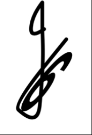
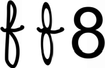
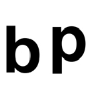

Chapter 12. Remembering numbers
“Group a list of letters together and you have a word that represents something – an image, an emotion, a person. Throw a few numbers together and you have, well, you have another number.”
~ Dominic O’Brien
Numbers have become an important part of our lives, yet no one has shown us how to remember them. You can use external memory devices to remember numbers and you can choose to outsource your brain. But if you are in business and you can recall facts and figures without referring to your ‘external brain’ or notes, then it builds trust and certainty. When you remember facts and figures it builds confidence in your memory, it builds mental strength, and it is like gym for your brain.
If you call out digits, the average person will only remember about seven digits forwards and only four to five backwards. If you have a trained memory there are no limits. I can remember a 50-digit random number in less than 20 seconds and 100 digits in 45 seconds. I have taken my number memory far beyond all the limits that have been set in that area.
Any person can produce the same results if they know the strategy. If you practise the methods and take pride in improving your memory, you can also develop these ‘super-human powers’.
Many people try to repeat numbers over and over again, trying to hold on to the number for dear life. They do more of what they have always done to try to improve their recall. We don’t only improve with practice; if you repeat a bad habit over and over it just gets worse. You also need a new method. We could use The Number Shape method to hold on to smaller numbers, but the method I am about to show you has so many more possibilities and applications.
What is easier to remember?
1. American Presidential Candidates
or
2. 34729401215721110
It is obviously “American Presidential Candidates”, it is easily understood. As soon as you say it you memorize it. It has meaning and makes a visual image in your mind. The number has no meaning, and it is not very memorable. So to remember numbers you need to give them more meaning.
The systems that the memory masters use vary, but most of them use a system where you change the numbers into words and then into images.
We take the numbers and twist them into shapes, so that they form letters. Then we turn the letters into words. This system seems like a lot of work but once you have your code down it will make the process of remembering numbers a breeze. The code almost memorizes itself; stick with it and open your mind to a whole new language. It is also a great way to exercise your verbal and numerical intelligence at the same time.
Let’s get started with learning the number code. Just go with this process, it will all come together in a moment. Let us begin with the vowels a, e, i, o and u. These letters have no value. They act as fillers or blanks. The letters w, h and y are also fillers or blanks. They also have no value. Just remember that for now.
Now, see the numbers in the following letters:
0 is the S, Z or C sound: S sounds like the hissing of a wheel (which looks like 0):
1 represents the T or D sound:
2 is the N sound:
3 is the M sound:
If I make the word TOMATOES, what will the number be?
T: 1, O: no value, M: 3, A: no value, T: 1, O: no value, E: no value and S: 0. The number would be 1310.
What word could you make for 321?
3: M, 2: N and 1: D or T. We have the letters MNT or MND. If we add the vowel ‘i’ we have the word Mint, or if we add a ‘d’ at the end and the vowel ‘e’ we have Mend. Or, try the vowel ‘a’ and add a ‘y’, then you can make the name Mandy.
It is like learning a new number language.
4 is the R sound:
5 is the L sound:

6 is the J, Sh, soft Ch or soft G sound:

What word can you make with 654?
Jailer.
7 is the K, C sound:
8 is the F or V sound:

9 is the B or P sound, looks like the mirror and upside down image of 9:

If I say cave, what is the number?
78.
What word can you make with the number 98?
Beef.
Now you can see that the number
3472 9401215 721110 is as easy as remembering
aMeRiCaN PReSiDeNTiaL CaNDiDaTeS
Do you now see how you can use this to remember any number?
You may be saying, “But now I have to remember a number and a word.” No, it is like learning how to read. In the beginning you really have to work hard to encode the information, but then it becomes easy. Think of the number 007, instantly you think of James Bond. We are trying to create the same experience with all numbers that you want to remember. We remember concrete information with ease, so you are not remembering more; you are just making it more memorable.
It will take a bit of time to master, but once you have it you will have it forever.
I will now give you a list of words for each number from 1 to 100.
This method is great because you don’t have to worry about spelling – it works on sounds.
00.Sauce
01. Soda
02. Sun
03. Swim
04. Sir
05. Seal
06. Sash
07. Sock
08. Safe
09. Soap
1. Tie
2. Noah
3. Ma
4. Ray
5. Law
6. Jaw
7. Key
8. Foe, UFO
9. Bee
10.Toes
11.Dad
12.Tan
13.Dam
14.Deer
15.Tail
16.Dish
17.Duck
18.Dove
19.Tape
20.Nose
21.Net
22.Nun
23.Gnome (Silent G)
24. Nero
25.Nail
26.Nosh
27.Neck
28.Navy
29. Nap
30. Mouse
31. Mat
32.Moon
33.Memo
34.Mower
35.Mail
36.Mash
37.Mike
38.Mafia
39.Map
40.Rose
41.Rat
42.Rain
43.Ram
44.Rower
45.Reel
46.Rash
47.Rock
48.Roof
49. Robe
50. Lassie(one S sound)
51. Lady
52.Lion
53.Limo
54.Lorry (one R sound)
55.Lily
56.Leach
57.Lock (ck one K sound)
58.Leaf
59.Lip
60.Chess (one S sound)
61.Jet
62.Chain
63.Jam
64.Chair
65.Jail
66.Cha – Cha
67.Shake
68.Chief
69. Jeep
70. Case
71. Cat
72.Can
73.Comb (Silent B)
74.Car
75.Coal
76.Cash
77.Coke
78.Cave
79.Cab
80.Face
81.Fat
82.Fan
83.Foam
84.Fire
85.Foil
86.Fish
87.Fake
88.Woof-woof
89. FBI
90. Bus
91. Bat
92.Bun
93.Bum
94.Bear
95.Ball (one L sound)
96.Beach
97.Back
98.Beef
99.Baby
100.Daisies
If you don’t like some of the above words make up your own.
Not only can you use this method to remember numbers, but it can also be used as a very effective giant peg memory system.
This peg list memorizes itself. Memorize 10 a day. Let’s say you want to memorize 10 to 15. For 10, the word is: toes. Think of the 1 as T and the 0 as S, then add vowels to make the word Toes. Make a clear image of toes in your mind. For 11, think of the digits 1 1, that is: D and D. Now fit in a vowel and we have Dad. See it clearly in your mind. When we get to 15 we can make the word doll – remember the system works with the sounds of the word, so the LL sounds like one L. I prefer to use the word tail.
There are many advantages to knowing this method of memory. You can use it to learn 100 bits of information easily and in order. Once you have these values you can remember any numbers and there is no limit. When each number represents an image you can hold the number in your mind and place it on a system to remember as many numbers as you choose.
I have also used this method to remember athletic and sports statistics, stock prices, and any key information relating to numbers. This method also works well to remember important dates in history. I enjoy remembering dates because it links historical events to a time line. Once this information is in your memory it is easy to correlate it to other events. With this method, I am able to remember up to 100 dates in five minutes. Plus, this is just another method that allows you to trap your thoughts and make information easier to recall.
Here is how dates are remembered:
1926 Television was first demonstrated.
The way I remember this one is to only remember the last three digits, because most of the dates we need to remember are all in the last thousand years. We take the 926 and use the code to make the word Punch. Now using the memory principles we can imagine that you punch the television and it starts to work.
1969 People land on the moon.
We can see a Bishop (969) on the moon. See a bishop walking on the moon and playing with the moon dust.
1901 The Nobel Prize was first awarded.
We can imagine that the first prize was made of Pasta (901).
1942 The first computer was developed.
We can imagine a computer that looks like a Barn (942).
1801 The first submarine was built.
See the submarine being built very Fast (801).
1784 The first newspaper was published.
See Caviar (784) all over the newspaper.
This number method was developed in the 1700s by a man named Stanislaus Mink von Wennshein who brought it to our conscious awareness. This method takes practice. You have to really work with it to make it work for you; then there will be no limits to your number memory and it will make you more knowledgeable.